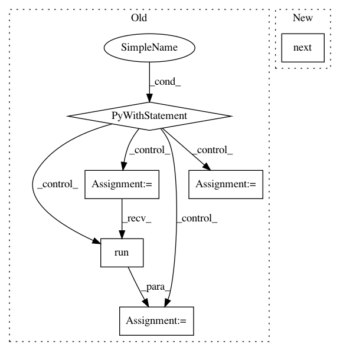

71753922bd63dfa73e3b10c572f73e268b406ae6,opennmt/tests/model_test.py,ModelTest,testSequenceToSequenceWithGuidedAlignment,#ModelTest#Any#,167
Before Change
params["guided_alignment_type"] = ga_type
features_file, labels_file, data_config = self._makeToyEnDeData(with_alignments=True)
model.initialize(data_config, params=params)
with tf.Graph().as_default():
dataset = model.examples_inputter.make_training_dataset(features_file, labels_file, 16)
iterator = tf.compat.v1.data.make_initializable_iterator(dataset)
features, labels = iterator.get_next()
self.assertIn("alignment", labels)
outputs, _ = model(features, labels=labels, training=True)
loss = model.compute_loss(outputs, labels, training=True)
loss = loss[0] / loss[1]
with self.session() as sess:
sess.run(tf.compat.v1.global_variables_initializer())
sess.run(tf.compat.v1.local_variables_initializer())
sess.run(tf.compat.v1.tables_initializer())
sess.run(iterator.initializer)
loss = sess.run(loss)
self.assertIsInstance(loss, Number)
def testSequenceToSequenceWithReplaceUnknownTarget(self):
model, params = _seq2seq_model()
params["replace_unknown_target"] = True
features_file, labels_file, data_config = self._makeToyEnDeData()
After Change
features_file, labels_file, data_config = self._makeToyEnDeData(with_alignments=True)
model.initialize(data_config, params=params)
dataset = model.examples_inputter.make_training_dataset(features_file, labels_file, 16)
features, labels = next(iter(dataset))
self.assertIn("alignment", labels)
outputs, _ = model(features, labels=labels, training=True)
loss = model.compute_loss(outputs, labels, training=True)
loss = loss[0] / loss[1]
In pattern: SUPERPATTERN
Frequency: 4
Non-data size: 6
Instances
Project Name: OpenNMT/OpenNMT-tf
Commit Name: 71753922bd63dfa73e3b10c572f73e268b406ae6
Time: 2019-07-05
Author: guillaume.klein@systrangroup.com
File Name: opennmt/tests/model_test.py
Class Name: ModelTest
Method Name: testSequenceToSequenceWithGuidedAlignment
Project Name: OpenNMT/OpenNMT-tf
Commit Name: 71753922bd63dfa73e3b10c572f73e268b406ae6
Time: 2019-07-05
Author: guillaume.klein@systrangroup.com
File Name: opennmt/tests/model_test.py
Class Name: ModelTest
Method Name: testSequenceToSequenceWithReplaceUnknownTarget
Project Name: tensorlayer/tensorlayer
Commit Name: f2073333b710a340403843763ba60eb1e6699916
Time: 2019-04-11
Author: rundi_wu@pku.edu.cn
File Name: examples/data_process/tutorial_tfrecord.py
Class Name:
Method Name:
Project Name: tensorlayer/tensorlayer
Commit Name: f2073333b710a340403843763ba60eb1e6699916
Time: 2019-04-11
Author: rundi_wu@pku.edu.cn
File Name: examples/data_process/tutorial_tfrecord2.py
Class Name:
Method Name: